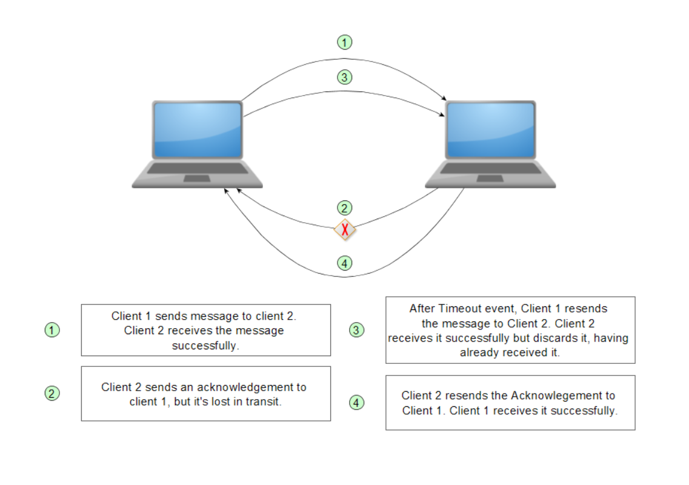

Description of the problem
The required solution for the project consists of an Inter-office messaging application. The application must be usable within a specific physical location such as an office building, so the systems must be connected to the same Local Area Network (LAN). The following is a list of the specific requirements of the system:

-

- The application must be implemented in a hybrid P2P architecture. A server must manage the user logins, while the messaging will be done directly between peers.
- The user application must be able to identify all the peers currently in the network and send and receive messages.
- The application must allow the users to save the conversations and give the option to download them into a file.
- The application must use the UDP transport layer protocol. It must manage the transmission errors, retransmissions, buffers and queues.
- The application will create a socket in port 40000 for the server connection and a socket in port 50000 for the P2P connection.
- The server must listen to the broadcast address and be bind to its assigned IP address.
The chosen solution: A Java based application
We chose to use the Java language to create our application for various reasons, including the following:
- The Java language is commonly used in the enterprise environment
- The project team was familiar with coding in Java
- Java provides libraries that specifically use the UDP transport protocol
- Oracle provides detailed documentation on how to create UDP servers and clients